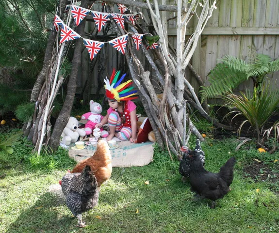

Beginner’s guide to keeping chickens
BY: GOOD MAGAZINE
The humble chook might just be the ultimate accessory for those in search of the good life. Here’s how to start a happy back garden flock of your own.
Chickens have kept us company for several thousand years. Roman farming expert Columella wrote a comprehensive guide to chicken-keeping in the first century AD, while across the Mediterranean, the Egyptians fondly called them ‘the birds that give birth every day’. Nowadays, there are more Gallus gallus in the world than any other bird – about 24 billion, in fact. They outnumber us by more than three to one. And while it’s difficult to go a day without encountering something a chicken has produced (just ask anyone with an egg allergy), it’s easy for many of us to go about our lives without ever getting up close to one. Chickens add more to a household than just eggs or an effective waste disposal unit for food scraps, they have personality and are actually quite intelligent. Unlike cats, dogs (or even children), they’ll reward you for keeping them fed and happy – with hundreds of eggs each year. But be warned: once you’ve poached your first fresh egg, you’ll never go back.
A coop for every shape, style … and budget
Make sure your coop has dark nest boxes, perches for roosting and somewhere chickens can shelter from sun, rain and draughts. Many coops on the market look like mini houses, but there’s also the ‘tractor’ style: an A-frame home plus a fenced area with no floor, but on wheels. This allows you to move the whole thing to different sections of the garden, so your chooks can scratch around while being contained. A tractor is ideal if you’ve got limited space. If you wish you can create your own coop – out of doll’s houses, recycling bins, old sheds, caravans (in Anton’s case) or from one of the many free DIY plans online. Whatever style you choose, make sure your coop is easy to clean out and collect eggs from the nest box. It doesn’t need to be palace-sized – as chooks like to sleep close together, you’ll only need around 20cm of perch space per bird, while nest boxes should be about 30cm x 30cm big. One nest box is sufficient for five to six hens. Line the nests with something cosy such as wood shavings, shredded newspaper, dried leaves or soft straw. Catherine recommends laying sheets of newspaper under the roosting area – these can be whipped out every couple of weeks and chucked straight in the compost.
Providing moveable feasts
Your hens will also need a fenced-off area (or ‘run’) where they can roam, forage, scratch and take dust baths. Don’t let them free-range over your whole property unless you’re willing for them to dig, eat – and poop – indiscriminately. “I underestimated how destructive they are!” says Wellington gardening writer Kimberley Rothwell of her three hens. “They can smell dirt from a mile away. They’ll get into it while your back is turned.” Areas of soil you have recently dug over and planted in tiny seedlings are particularly vulnerable. But if you’re got a portable fence, chickens can be a big help in the garden. They’ll turn over and weed soil for you by scratching through it, and they love to eat snails and slugs. It’s also worth moving them around to prevent one patch of your garden becoming completely denuded. One option is to let your chooks out in the weekends when you can keep an eye on them – or you can give your kids the job of chasing them away from the veggie patch. Don’t be alarmed if your chook starts thrashing around in the dirt, beating her wings. She’s taking a dust bath to rid her feathers of extra oil, kill mites and keep herself clean. Hens love to make a hollow in the dirt where they can flap around and shake soil through their feathers, so include a dust bath area within your run. Anton recommends scratching over a corner to uncover fine, sandy dirt and then leaving your hens to discover it.
Following the rules:
Each council in New Zealand sets its own regulations for poultry, which you can find online. Auckland and Wellington allow you to have up to six hens but no roosters, and include plenty of directions about how far from your home and boundary the coop must be. (You don’t need a rooster for hens to produce eggs, as hens will lay whether their eggs have been fertilised or not.) On the other hand, Christchurch and Dunedin simply require that your chooks be well cared for and not a nuisance.It’s not in the rules, but most importantly you want to get your neigbours on board, so let them know of your plans before your chickens arrive – you could even suggest a scraps-for-eggs swap. “All they have to do is complain and they’ll make life very difficult for you,” warns Catherine. Sharing eggs is one way to win the neighbours over, homemade meringues is another … if the chooks don’t do the job for you. When Catherine moved her hens to a different part of the garden, one of her neighbours commented that she missed having them run over to “say hello” whenever she was hanging out the washing.
Buying chooks:
Hens start laying when they’re 5-6 months old, and will (mostly) keep going consistently for 2-3 years, at which point egg production starts to tail off. To get the most eggs, start off your flock with pullets (also called ‘point of lay’ hens) which are 4-5 months old. Chickens are highly social and become lonely or bored when on their own, so it’s best to start with two or three. Before you settle on a breed, think about what you want from your chooks. A regular supply of eggs? A beautiful pet? Various breeds have different personalities, lay different quantities and colours of eggs, moult for different lengths of time and are more or less likely to go ‘broody’ (where a hen sits on her nest for long periods in an attempt to hatch her eggs). As with car mechanics, when it comes to chicken breeders it’s worth asking around for recommendations. Try the Poultry in Urbania group at Ooooby (here) or the discussion forums at Poultry Central (or look here). And don’t be afraid to examine the chooks yourself before you buy them – look for bright eyes, glossy feathers, a clean bottom and beaks that haven’t been trimmed.
Rescue hens
Battery farms normally get rid of their chooks when they’re around 18 months old – barely teenagers in chicken years. Hens naturally go on a three-month break from laying at this point and it’s cheaper for farms to buy a batch of new pullets rather than feed hens who are unproductive. Luckily there are groups such as New Zealand Hen Welfare (here) and Animal Sanctuary (and here) who rescue hens and rehabilitate them for adoption. Battery hens require a bit more attention than the average chook. Their feathers are ragged from rubbing up against the bars of their A4-sized cages, and they’re scared of the great outdoors. Because they’ve spent their whole lives in confinement, they don’t know how to perch, lay eggs in nesting boxes, or scratch in the ground for food. Anton recommends starting them on pellet feed, which they’re more likely to recognise than household scraps. “They don’t eat scraps because they’re used to eating from a funnel,” he explains. Since they’ll lay eggs “all over the place”, Anton retrains them by putting the chooks in the boxes, which he fills with fake eggs to show them where to lay. Given time, battery hens will steadily improve in both confidence and health – and they begin to show their character. Even though they can be less productive than regular chooks due to their intensive first year of laying, Anton recently adopted 30 from Dunedin and reckons they’ve got great personalities.
Healthy chooks equals happy chooks
You’ll get out of your chickens what you put into them – literally. Hens require a wide range of nutrients to produce the best eggs. You can buy commercial pellet feed that’s formulated to contain everything they need, or you can make your own (recipes abound online for those with the time and inclination). Kimberley feeds her three chooks on a Wellington-manufactured pellet mix from Sharpes Stock Feeds (www.stockfeeds.co.nz), as well as nutritious extras such as wheat, dandelions and scraps from the local veggie market. Chickens are omnivores and will eat anything we do. So it’s yes to the scrapings off last night’s dinner plates and extra bits of carrot or broccoli, but no to orange peel, onion skins or uncooked potato peelings. Don’t give them raw egg shells, or they’ll get a taste for eggs and start eating their own. Egg shells are around 94 percent calcium, so to ensure your chooks have enough of this mineral in their diet, save empty egg shells in your oven warmer drawer. Once they are dried, crush them up and scatter in your chickens’ run. This will provide your chooks with vital grit as well as something to forage for. What your hens eat not only affects the quality of their eggs, but also the colour. For deep yellow yolks, give them dark leafy green veggies, wheatgrass or alfalfa sprouts. Avoid leaving chicken feed out in the open, as it can attract pests such as rats – and mouldy food won’t do your hens any good. If pests are a problem, try a lidded feed box such as those by Kiwi company Grandpa’s Feeders (www.grandpasfeeders.co.nz). Chooks tread on a small platform to open the lid for food, which is kept secure and watertight when the hens aren’t snacking.
Going off the lay
Hens instinctively stop laying in winter as chicks don’t have as good a chance of survival in the cold. Egg production drops off as soon as there are less than 14 hours of light each day, and hens take a rest. This is why the egg features so prominently at Easter, the northern hemisphere spring. We’re used to eggs year-round thanks to commercial farming techniques (such as leaving the barn lights on for 15 hours a day) but way back when, the first egg after a long winter must have been quite special. Once a year, chickens moult – usually in autumn in preparation for the colder weather. Since feathers are around 80 percent protein, chooks aren’t able to produce eggs as regularly while they’re regrowing their plumage. Moulting happens over several weeks and egg production slows down during this time. Chickens can also go off the lay because their diet’s not quite right, such as not getting enough clean drinking water or adequate protein. On the flip side, fat hens won’t lay – so spoiling them with low-protein treats such as corn can have an impact. Stress can also affect your laying ladies. Moving coops or getting a fright from a predator or an overenthusiastic toddler can potentially put them off. But a regular routine, peace and quiet and a bit of TLC will usually bring them right.
Going broody
Sometimes a hen becomes set on hatching her eggs – even if they’re not fertilised and there’s no chance they ever will. She’ll sit on her nest and fluff up her feathers angrily if anyone comes near. Some breeds are more prone to ‘going clucky’ than others. Rhode Island Reds, for instance, typically lay fewer, but bigger, eggs than their Brown Shaver counterparts, and they go broody more often. On the upside, they make better mothers if you want to try your hand at rearing chicks. If its eggs you’re after then there are a few tactics you can try to reset your hen’s maternal instincts. Anton’s solution is to remove the eggs and break the nest apart so the hen can’t get comfortable. Poultry farmer Suzie Baldwin suggests in her book Chickens (see below) that you remove a broody hen from her nest several times daily to break the habit. “Just pick her up and pop her by the food and water,” Suzie says. You’ll also need to cool her down. Broody chooks have an higher body temperature than usual as they turn into living incubators to keep their eggs cosy. Try dunking your clucky chicken’s bottom in cold water, suggests Suzie, or put small bottles of frozen water into her nest.
Barnyard bullying
Chickens operate in a highly defined social structure. There’s an alpha hen in every flock, and they’ll peck at each other to establish who’s boss. Phrases such as ‘pecking order’ and ‘hen-pecked’ are straight from the coop. “They’re very racist,” says Anton. “If you’ve got Red Shavers and you put a white hen in there, they’ll pick on her for her whole life.”
Chickens: The Essential Guide to Choosing and Keeping Happy, Healthy Hens by Suzie Baldwin, Kyle Books/New Holland 2012, $42
The Chicken Encyclopedia: An Illustrated Reference by Gail Damerow, Storey Publishing/Bookreps 2012, $45
Urban Chicks: Celebrating Backyard Chooks in the City by Trevor Newman & Renee Lang, Renaissance 2012, $35